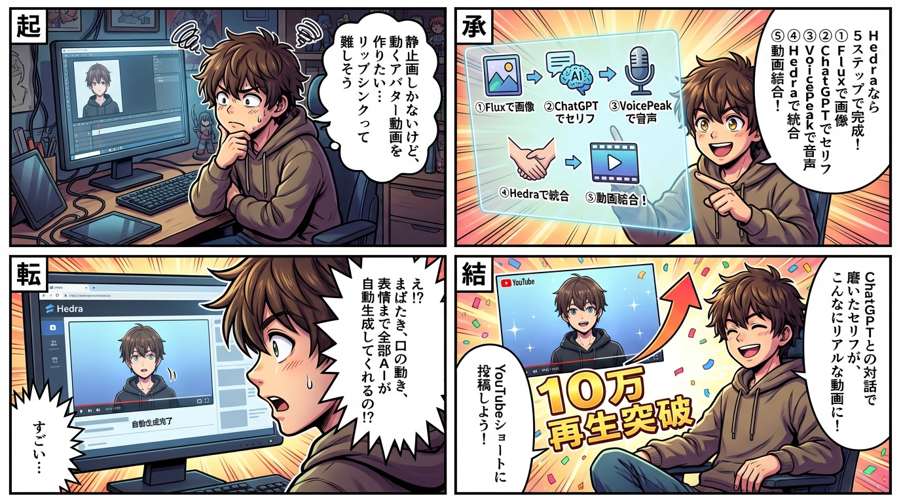
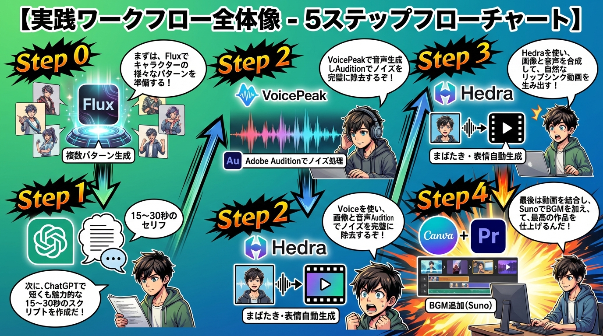

学習マンガで理解する
第1章: Hedraの概要と革新性

Hedra（ヘドラ）は、静止画像と音声を統合してリアルなリップシンク動画を生成できるAIツールです。従来の動画制作では、キャラクターに自然な口の動きや表情を付けるには高度な編集技術が必要でしたが、Hedraを使えば、誰でも簡単にプロフェッショナルな品質のアバター動画を作成できます。
Hedraの最大の特徴は、まばたき、口の動き、感情表現など、細かな表情の変化を自動的に生成する点にあります。これにより、視聴者に違和感を与えない自然な動画制作が可能になります。無料プランでも基本機能を試すことができ、有料プランにアップグレードすると商用利用、透かしの削除、生成速度の向上などの追加機能が利用できます。
アカウント登録はGoogleアカウントまたはメールアドレスで簡単に行え、直感的な管理画面からすぐに動画生成を開始できます。これにより、YouTubeショート動画、プレゼンテーション、教育コンテンツなど、幅広い用途でリップシンク動画を活用できるようになります。
第2章: 実践ワークフロー全体像
Hedraを使った動画制作は、明確な5つのステップで構成されています。この体系的なアプローチにより、初心者でも迷うことなく高品質な動画を制作できます。
Step 0: 画像素材の準備
Fluxなどの画像生成AIを使って、キャラクター画像を作成します。今回の事例では、キャットウーマン風のキャラクター画像を複数パターン生成し、セリフごとに異なる表情の画像を用意しました。
Step 1: ChatGPTでスクリプト作成
動画のセリフをChatGPTと対話しながら作成します。画像のスクリーンショットをChatGPTにアップロードし、キャラクターの雰囲気に合ったセリフを提案してもらいます。15〜30秒程度のショート動画に最適な長さに調整します。
Step 2: VoicePeakで音声生成
ChatGPTで作成したスクリプトをVoicePeakに入力し、自然な日本語音声を生成します。必要に応じてAdobe Auditionなどで音声にノイズやエフェクトを追加し、キャラクターの雰囲気に合わせた調整を行います。
Step 3: Hedraでリップシンク動画生成
画像と音声をHedraにアップロードし、リップシンク動画を生成します。セリフごとに画像と音声のペアを用意し、それぞれを個別に処理します。アスペクト比（1:1、16:9、9:16など）も柔軟に設定できます。
Step 4: 動画の結合と仕上げ
CanvaやAdobe Premiereを使って、生成した複数のリップシンク動画を結合し、BGMを追加して完成させます。BGMはSunoなどのAI音楽生成ツールを活用すると効率的です。
第3章: ChatGPTを使った効果的なスクリプト作成

スクリプト作成は動画の品質を左右する重要なステップです。ChatGPTを活用することで、キャラクターの個性に合った魅力的なセリフを効率的に作成できます。
まず、生成した画像のスクリーンショットをChatGPTにアップロードします。これにより、ChatGPTが画像の雰囲気を理解し、より的確なセリフを提案できます。最初はラフな指示で構いません。例えば「30秒未満のショートムービーを作りたい。強いメッセージが欲しい」といった大まかな方向性を伝えます。
次に、キャラクターの性格や口調を具体的に指定します。「誘惑的な雰囲気で」「男性を叱るようなメッセージ」など、細かいニュアンスを伝えることで、セリフの質が大きく向上します。今回の事例では、最初は「猫」をテーマにしていましたが、途中で「AI」に変更することで、より現代的で深みのあるメッセージに進化しました。
重要なのは、ChatGPTとの対話を通じてセリフを磨き上げることです。一度の指示で完璧なセリフが生まれることは稀なので、複数回のやり取りを重ねて理想のスクリプトに近づけていきます。最終的には「AIという言葉を出さずに、共存を促すメッセージ」という形で、視聴者の想像力を刺激する効果的なセリフが完成しました。
第4章: VoicePeakでの音声生成とノイズ処理

ChatGPTで作成したスクリプトを音声化する際は、VoicePeakが強力なツールとなります。VoicePeakは日本語の自然な発音に優れており、商用利用も可能な高品質な音声を生成できます。
スクリプトをVoicePeakにそのまま入力すると、自動的に音声が生成されます。複数のセリフがある場合は、セリフごとに分割して音声ファイルを作成すると、後の編集作業が楽になります。VoicePeakでは、女性の声、男性の声など、複数のボイスモデルから選択できるため、キャラクターに合った声を選びます。
音声の品質をさらに向上させるには、Adobe Auditionなどのオーディオ編集ソフトを活用します。適度なノイズを加えることで、声に深みや雰囲気を持たせることができます。ただし、過度なエフェクトはHedraでのリップシンク精度を下げる可能性があるため、バランスが重要です。
セリフごとに音声ファイルを分割する理由は、Hedraでの処理を効率化するためです。1つの長い音声ファイルではなく、セリフごとに分けることで、それぞれの場面に最適な画像を組み合わせることができ、より表現力豊かな動画が完成します。
第5章: Hedraでのリップシンク動画生成の実践

Hedraの操作は非常にシンプルです。まず、オーディオファイル（音声）をアップロードし、次にスタートフレーム（静止画像）をアップロードします。そして「Generate」ボタンをクリックするだけで、数分でリップシンク動画が生成されます。
アップロードする画像は、セリフの内容や雰囲気に合わせて選びます。複数のセリフがある場合は、それぞれに異なる表情の画像を用意することで、動画全体に変化とダイナミズムが生まれます。画像のアスペクト比は、1:1（正方形）、16:9（横長）、9:16（縦長・ショート動画向け）など、用途に応じて柔軟に設定できます。
生成された動画では、口の動きだけでなく、まばたき、微細な表情の変化、頭部のわずかな動きなど、非常にリアルな表現が自動的に追加されます。これにより、静止画像だったキャラクターが生き生きと動き出し、視聴者に強い印象を与えます。
無料プランでは透かし（Hedraのロゴ）が表示されますが、有料プランにアップグレードすることで透かしを削除でき、商用利用も可能になります。また、有料プランでは生成速度が向上し、複数の動画を同時に処理できるため、効率的な制作が可能です。
第6章: 動画結合と最終仕上げのポイント

Hedraで生成した複数のリップシンク動画は、CanvaやAdobe Premiereなどの動画編集ソフトで結合します。セリフの順序を考慮しながら、スムーズなつながりになるように配置します。
シーン間の切り替えには、適度なトランジション（フェードイン・フェードアウトなど）を加えると、プロフェッショナルな仕上がりになります。ただし、過度なエフェクトは視聴者の注意を散漫にさせるため、シンプルな切り替えが効果的です。
BGMの追加は動画の雰囲気を大きく左右します。SunoなどのAI音楽生成ツールを使えば、動画のテーマに合ったオリジナルBGMを短時間で作成できます。BGMの音量は、セリフが聞き取りやすいレベルに調整することが重要です。
最終的な動画の長さは、YouTubeショート（60秒以内）、TikTok（15〜60秒）など、配信プラットフォームに最適化します。40秒程度の長さが、視聴者の集中力を維持しながらメッセージを伝えるのに適しています。
完成した動画は、エクスポート時に高品質設定（1080p以上）を選択し、視聴体験を損なわないようにします。これにより、Hedraの細かな表情表現も鮮明に表示され、動画の訴求力が最大化されます。